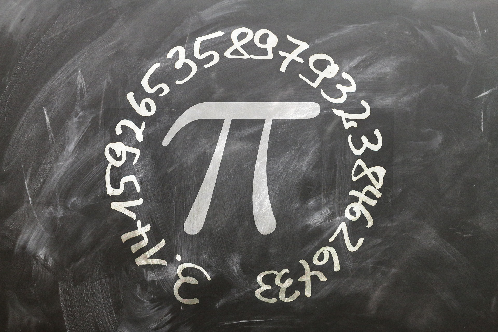
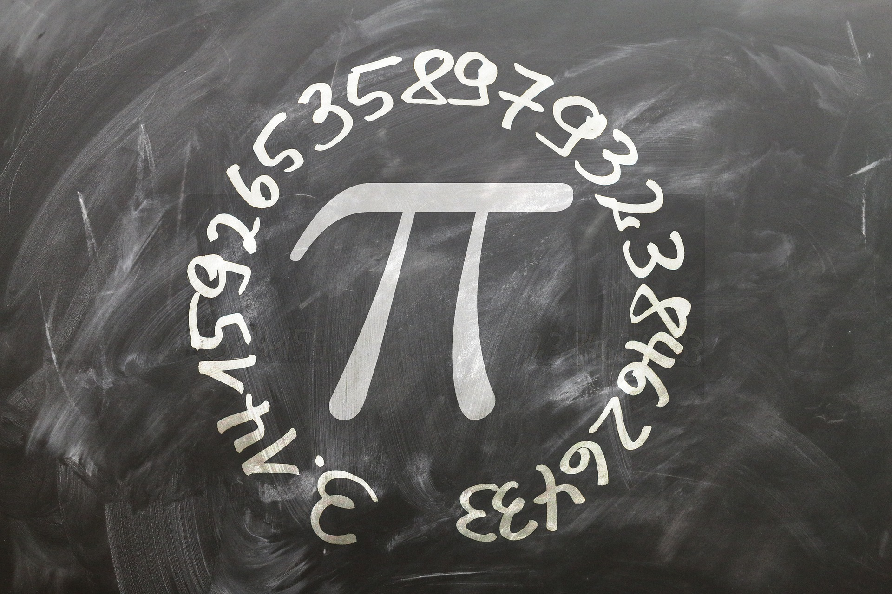

Olá, meu nome é Luana. Eu sou professora e trabalho com o ensino de ciências exatas e da natureza. Sou bacharel em engenharia ambiental desde de 2017 e atualmente estou cursando a graduação em licenciatura plena em matemática. Procuro utilizar metodologias tradicionais e progressivas, incorporando oportunidades de aprendizagem experimental sempre que possível. Caso você tenha interesse em aulas particulares por favor entre em contato comigo através de minhas redes sociais.